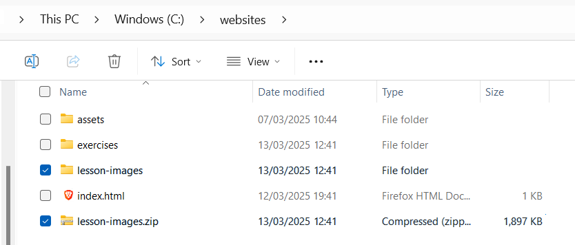
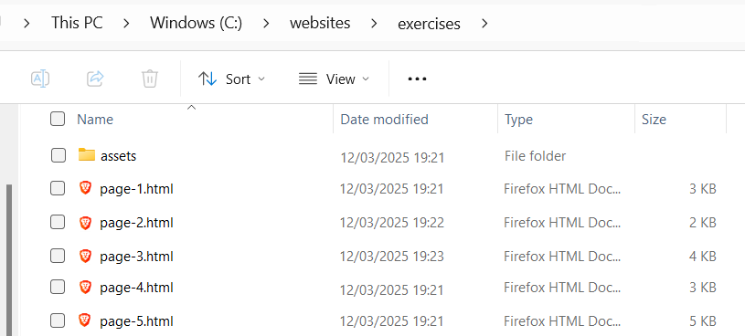
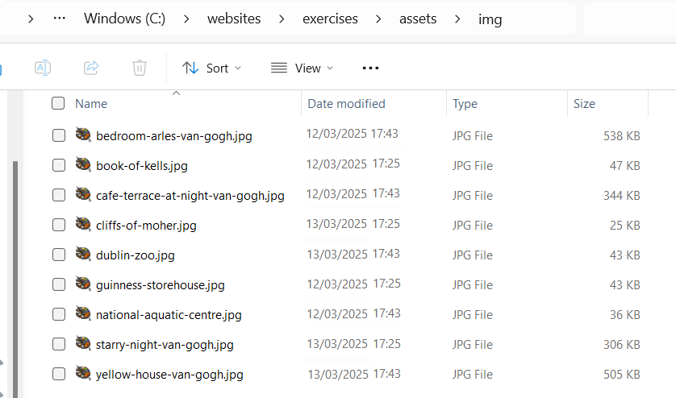
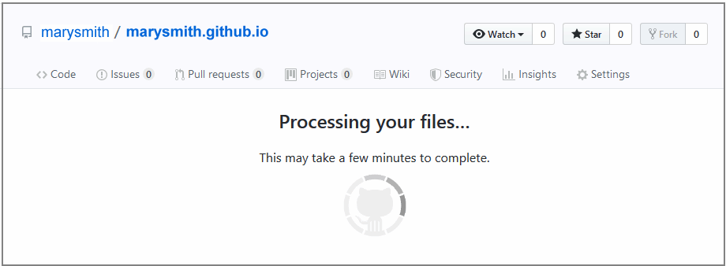

Learning Goals
At the end of this Tutorial, you will be able to:
- Know when to use the JPG and PNG file formats for bitmap images.
- Be familiar with common sources of free-to-use stock images.
- Insert images in a web page and add alternative text with the alt attribute
- Insert spacing beneath images, add drop shadow and rounded corner effects, and remove image backgrounds.
About JPG and PNG image formats
Images added to web pages are mostly either in jpg or png format.
JPG format images
This format (pronounced jay-peg) is the best choice for displaying photographs that contain lots of colours and colour gradations.
Image files in this format end with the filename extension .jpg or .jpeg. You can see some examples of typical JPG-format images below.

PNG format images
This format (pronounced pea-n-g) is typically used for images that contain areas of solid colour, for logos and icons, for text, and for charts, diagrams and line drawings.
Below are some examples of images suited to this file format. Such files end with the extension .png.

Photographic images can also be saved in PNG-format and will display in a web page with the same quality as if they were JPGs. But the image file sizes will be larger and, as a result, the web page will take longer to load.

A feature of PNG format images is that, unlike JPG files, they can have transparent backgrounds.
Where to find copyright-free images
A wide range of so-called stock photography websites exists from where you can download, modify and use copyright- and royalty-free images, whether for personal, not-for-profit or commercial web projects.
In most cases, you do not need to credit the image’s creator, but it is good practice and courteous to do so.
Here are some popular sources of general-purpose stock images:
Here are some online libraries that offer less generic and more stylised photography:
The Internet’s largest collection of free online images is the one below. It includes vintage photography and reproductions of classic works of art:
For a wide-ranging list of online image libraries, from the National Library of Ireland to the British Library and NASA, visit the following article from CSS Tricks.
For illustrations rather than photographs, here are four open-source collections of vector images. Files can be downloaded as bitmap images in PNG-format.
Adding images to a web page
You add an image to a web page using the single, simple line of HTML code such as shown below.
<img src="assets/img/dog.jpg" alt="My dog Rover, playing in the park">
Or:
<img src="assets/img/cat-picture.png" alt="My cat Judy, sitting on a chair">
As you can see from the examples below, the HTML <img> tag for every image has the same format.

After the <img> tag name are the three letters of src that set the source (location and file name) of the image file. This is known as an attribute or property of the <img> tag.
Note that the <img> tag does not need a closing tag. It is one of the few examples of self-closing tags in HTML.
Images and alt text
If, as the result of a slow connection or other reason, an image on a web page cannot be displayed, HTML offers an attribute named alt, a short form of ‘alternative text.’
If you omit the alternative text for any image on a web page, your web page is regarded as "invalid".
Below you can see the output produced by the official W3C HTML validity checker on a web page that is missing the alt attribute from an <img> tag.
In this Tutorial, you will add images to two new sample web pages in your exercises folder.
You will also update your website home web page with an image, and with hyperlinks to your two new sample web pages.
Downloading your sample files
Your first step is to download the files you need for this Tutorial.
- Download the following compressed file to your computer: lesson-images.zip
- Copy the ZIP file into your websites folder.
- Uncompress the ZIP file as shown below.
- The files will unzip into a new sub folder in your websites folder named lesson-images.  Inside this new sub-folder you should see 13 files: two HTML files, two CSS files and a group of image files. Next, you will copy these unzipped files to their appropriate sub folders.
- From the websites/lesson-images sub-folder, copy the two HTML files to your websites/exercises sub-folder. 
- From the websites/lesson-images sub-folder, copy the two CSS files to your websites/exercises/assets/css sub-folder.
- Display your websites/exercises/assets sub-folder, and inside it create a new sub-folder named img.
- To this new websites/exercises/assets/img sub-folder, copy the various image files from your websites/lesson-images sub-folder. 
- You no longer need the downloaded lesson-images.zip file or the websites/lesson-images sub-folder. You can delete them both.
- In your web browser, display these two web pages:
page-4.html
page-5.html
You are now ready to work with the sample files you have downloaded.
Working with the van Gogh web page
First you will work with the sample page-4.html web page, the sample style-4.css stylesheet and four images.
- In Visual Studio Code, open the following two files:
page-4.html
style-4.css - After the paragraph under the heading “The Arles Years”, type the following code:
Or, just copy-and-paste the following:
<img src="assets/img/bedroom-arles-van-gogh.jpg" alt="Bedroom in Arles, van Gogh"> - Next, add the following three images in the locations shown.
<img src="assets/img/yellow-house-van-gogh.jpg" alt="The Yellow House, van Gogh"><img src="assets/img/cafe-terrace-at-night-van-gogh.jpg" alt="The Cafe Terrace at Night, van Gogh"><img src="assets/img/starry-night-van-gogh.jpg" alt="Starry Night, van Gogh"> - When finished, save your page-4.html file and view it in your web browser.
- You can see that some vertical space is need under your images.
- In your style-4.css stylesheet, at the bottom of the file, add a new declaration for img and inside a single style rule for margin-top: as shown below, and save your stylesheet.
- In your browser, note the effect of adding this spacing under the images.
✅ Task complete.
Working with the Tourism web page
Next you will work with the sample page-5.html web page, the sample style-5.css stylesheet and five images.
- In Visual Studio Code, open the following two files:
page-5.html
style-5.css - Directly under the sub-heading “Guinness Storehouse, Dublin”, type the following code:
Or, just copy-and-paste the following:
<img src="assets/img/guinness-storehouse.jpg" alt="Guinness Storehouse"> - Next, add the following four images to your HTML file in the locations shown.
- When finished, save your page-5.html file.
- In your style-5.css stylesheet, at the bottom of the file, add a new declaration for img and inside a single style rule for margin-top: as shown below, and save your stylesheet.
- Also in the stylesheet file, update the margin-bottom: style rule for the h2 declaration as shown below.
✅ Task complete.
Adding some visual effects
Next you will add some visual effects to the design of your two sample web pages.
Adding a drop-shadow effect to images
In VS Code, open style-4.css, update the img declaration as shown below, save your stylesheet, and view the effect on your web page in a browser.
Drop-shadow also known as box-shadow, is a visual effect that adds a shadow-like border around an element, making it appear as if it's floating above the surface behind it.
✅ Done.
Adding a rounded corner effect to images
In VS Code, open style-5.css, update the img declaration as shown below, save your stylesheet, and view the effect on your web page in a browser.
Your images now have smooth, rounded corners on all four sides.
✅ Done.
Adding an image with a transparent background
Follow the steps below to remove the background from an image, and add the image to a web page.
- Download the image below to your üìÅ exercises/assets/img sub-folder: backpackers.png
- In VS Code, open page-5.html and insert the new image in the <header> as shown below.
- In a new tab of your web browser, go to the website below: https://www.remove.bg
- Upload your backpackers.png image to the website, remove its background, and download the processed image to your üìÅ exercises/assets/img sub-folder.
- Delete the original backpackers.png file, and rename the new image with a transparent background to the same file name. When you view your web page in a browser, the top of the page should now look similar to that below.
✅ Done.
Highlighting text elements
For example, of the five tourist attractions in page-5.html, there are two paragraphs of text. The second paragraphs always looks like that below.
Let's highlight the text of this second paragraph.
- In VS Code, open page-5.html and add a new class this is second <p> tag for all five of the tourist attractions as shown below.
- In your style-5.css stylesheet, add a new .highlight-text class declaration with three style rules as shown below.
- Save your web page and stylesheet and view the effect on your web page in a browser.
 As you can see, the highlighted text extends across the full width of the screen. This is because the <img> tag is treated as a block-level element, like <h1> and <p>.
As you can see, the highlighted text extends across the full width of the screen. This is because the <img> tag is treated as a block-level element, like <h1> and <p>. - To make the background colour effect only extend behind the actual content, and not the full screen width, add one further style rule as shown below.
- Save your style-5.css. In a browser, the highlighter text should now look similar to that below.
✅ Done.
Embedding a YouTube Video
Your next task is to embed a video from YouTube into your page-4.html web page.
- In the page-4.html file, scroll down to just after the <h1> heading and press the Enter key a few times to open up some blank lines.
- Next, click the link below to open a new web browser tab that displays a video on the YouTube website. Vincent van Gogh: The Humble Genius
- Under the video, click the option named Share.
- From the choices now displayed, choose Embed.
- From the pop-up box, click the Copy button. You can now close the YouTube web browser tab.
- Return to VS Code and the page-4.html file.
- Paste the copied YouTube embed code into your web page.
- In your web browser, reload and view your page-4.html web page. It may take a few seconds for the embedded video to load, depending on the speed of your Internet connection.
Making the video responsive
The problem with embedding YouTube videos directly is that they are positioned in an <iframe> container. You cannot make an iframe responsive. A fixed width and height need to be set for it.
Follow these steps to make the embedded video scale according to the width of the user’s viewport.
- In your page-4.html file, select <iframe> container you copied from YouTube.
- Copy the code below and paste it over the YouTube <iframe> container to replace it.
This ‘wraps’ the YouTube video code in a new <div> container<div class="video-container"> <iframe src="https://www.youtube.com/embed/wI2i5ca1RT4" frameborder="0" allow="accelerometer; autoplay; encrypted-media; gyroscope; picture-in-picture" allowfullscreen></iframe> </div> - In VS Code, switch to the style-4.css stylesheet.
- At the bottom of the stylesheet, copy-and-paste the following, and save the file.
/* ===== VIDEO ===== */ .video-container { position: relative; width: 100%; aspect-ratio: 16 / 9; margin-bottom: 32px; } .video-container iframe { position: absolute; width: 100%; height: 100%; } - In your web browser, reload and view your page-4.html web page on desktop/laptop and mobile screens.
✅ Done.
Updating your website home page
Now that you have created and styled four new web pages, let’s add hyperlinks to these new pages to the ‘home page’ of your website.
Updating your home page content
Follow the steps below:
- In Visual Studio Code, open this HTML file in your websites folder: index.html
- Copy-and-paste the following new lines to your web page, directly under the line that contains the link to the page-3.html web page.
<p><a href="exercises/page-4.html">Vincent van Gogh</a></p> <p><a href="exercises/page-5.html">Irish Tourism</a></p> - Save your index.html web page and view the result in your browser.
Adding an image to your home page
Before adding images to your home page, you need to create a sub-folder to store them.
For Microsoft Windows users, here are the steps:
- Open File Explorer and display your üìÅ websites/assets sub-folder.
- In the blank space at the right side, right-click and choose New | New folder from the context menu.
- Give your new sub-folder the name img.

DO NOT type upper-case letters. Type img.
DO NOT type 'Img' or 'IMG'.
✅ That’s it.
The assets sub-folder of your 'main' websites folder now has two sub-folders: one for stylesheets and one for images.
Now, you can add one or more images to the home page of your website.
- In VS Code, open your home page index.html file.
- In your web browser, select and download a suitable image from the range of copyright-free, stock photography websites.
- Copy your selected image from your Downloads folder to your assets/img sub-folder.
- Add the image to your index.html web page, inside the <header> tag. In the <img> tag, don’t forget to include the alt attribute with some descriptive text.
- Save your web page and view it in your web browser.
✅ All tasks complete.
Uploading your files to GitHub
You are now ready to upload your work to your account on GitHub.
- Open a new tab in your web browser and go to github.com. If you are not already signed in to your GitHub account, sign in now.

- On your GitHub home page, click the ‘repo’ that holds your web pages. Its name will look as follows, where username is your chosen username on GitHub.
username.GitHub.io

- On the next GitHub screen displayed, near the right of the screen, you can see a button named Add file. Click on it.

- From the dropdown list displayed, choose the option Upload files.

- In File Explorer (Windows) or Finder (Apple Mac), drag-and-drop your üìÑ index.html file and your üìÅ assets and üìÅ exercises sub-folders to upload them to your repository on GitHub.

- Scroll down to the bottom of the GitHub screen, and accept or edit the short message (Add files via upload) in the Commit changes box.
- Finally, click the green Commit changes button to upload your files. 
Your updated home page and four new web pages are now published on GitHub at web addresses similar to the following:
https://username.github.io
https://username.github.io/exercises/page-4.html
https://username.github.io/exercises/page-5.html
It may take a few minutes for your uploaded files to appear on GitHub.
More learning resources
Tutorial Quiz
Tutorial Podcast
Further resources
A quick guide to website photography
By Eric Karkovack at Speckyboy